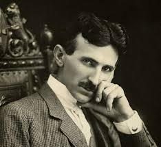
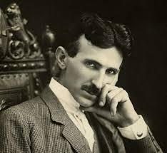

Naučno udruženje
Nikola Tesla
Naučno udruženje
Nikola Tesla
Udruženje "Nikola Tesla" nastalo je 2001. godine saradnjom profesora Ime Prezime na fakultetu Primijenjenih nauka i studenata treće godine koji su nakon osvojenog drugog mjesta na internacionalnom matematičkom samitu radova odlučili okupiti istraživače i vrijedne studente u svojoj zemlji.
Osnovani kao skromna grupa entuzijasta, udruženje je raslo s vremenom, privlačeći sve više mladih talenata i istraživača. Tokom godina, udruženje je postalo centralno mjesto za naučnu razmjenu, istraživanje i edukaciju, ujedinjavajući stručnjake i entuzijaste iz različitih dijelova svijeta te stvorilo mnoge konekcije sa univerzitetima i israživačkim centrima širom svijeta.
Rad udruženja čine istraživački projekti i manifestacije koje obuhvataju konferencije, simpozijume i radionice na kojima se razmatraju najnoviji naučni radovi i ideje iz oblasti fizike, matematike i srodnih disciplina.
Osim toga, udruženje redovno organizuje i edukativne programe, kao što su ljetne škole i seminari, koji pružaju priliku mladim istraživačima da steknu nova znanja i vještine iz svojih oblasti interesa.
Udruženje "Nikola Tesla" takođe podržava i sprovodi istraživanja u različitim oblastima, od teorijske fizike do primijenjene matematike. Kroz svoje istraživačke projekte, članovi udruženja doprinose razvoju nauke i tehnologije, istražujući fundamentalne zakonitosti prirode i razvijajući inovativna rješenja za aktuelne probleme.


Svojim aktivnostima, Udruženje "Nikola Tesla" nastavlja da promoviše nauku, inspiriše buduće generacije istraživača i gradi mostove saradnje između naučne zajednice širom svijeta.
Naziv udruženja inspirisano je najvećim genijem i naučnikom ikada i to upravo sa naših prostora, Nikolom Teslom.
Ko je bio Nikola Tesla?
Izumitelj, elektrotehničar, fizičar Nikola Tesla rođen je 9/10. srpnja 1856. godine u mjestu Smiljan kraj Gospića. Potječe iz pravoslavne obitelji, otac Milutin je bio pravoslavni svećenik, a majka Georgina (Đuka) također potječe iz pravoslavne svećeničke obitelji Mandića. Imao je tri sestre: Milku, Angelinu i Maricu te jednog brata Danu. Prvo školovanje započinje u rodnom Smiljanu gdje ide u Krajišku trivijalku, školu gdje se uči njemački jezik, računanje i vjeronauk, nakon čega odlazi u Gospić gdje ide u Pripremnu osnovnu školu i Nižu realnu gimnaziju. Iz Gospića odlazi u Rakovac u Karlovcu gdje završava Višu realnu gimnaziju. U Grazu upisuje studij na Visokoj politehničkoj školi sa stipendijom Vojne krajine, no nakon ukidanja stipendije radi razvojačenja Vojne krajine Nikola ne uspijeva završiti drugu godinu studija te se odaje kartanju, kockanju da nadoknadi taj financijski gubitak, ne uspijeva pa odustaje od studija prije treće godine. Kratko vrijeme radi u Mariboru pa nakon smrti oca 1879. god. radi u Realnoj gimnaziji u Gospiću.
 

Godine 1880. pokušava upisati studij u Pragu što mu ne uspijeva pa godinu kasnije počinje raditi u Budimpešti te sudjeluje u izgradnji prve telefonske centrale.
Iako moram svoju inventivnost zahvaliti majčinu utjecaju, vježbe koje mi je otac davao bile su veoma korisne. Sadržavale su mnoštvo zadataka, npr. pogađanje tuđih misli, otkrivanje raznih grešaka ili izraza, ponavljanje dugih rečenica ili računanje napamet. Te su mi dnevne vježbe imale ojačati pamćenje i razum, a posebno razviti kritičnost i bile su nesumnjivo veoma korisne. Moja majka potjecala je iz jedne od najstarijih obitelji ovog kraja, koja je u sebi nosila izumiteljsku žicu. I njezin otac i njezin djed izumili su mnoga pomagala za kućanstvo, zemljoradnju i za druge svrhe. Uistinu je bila velika i izuzetno sposobna žena, hrabra i postojana, svladavala je životne oluje i izvukla iz njih mnoga iskustva. […]
Moja je majka bila prvorazredni izumitelj i bila bi, vjerujem, postigla vrlo mnogo da nije bila toliko udaljena od suvremenog života i onih mnogobrojnih mogućnosti koje on pruža. Izumila je i izradila mnoge naprave. Tkala je najljepše uzorke nitima koje je sama isprela. Čak je i sjemenje sijala, uzgajala biljke, odvajala vlakna. Radila je neumorno, od zore do kasno u noć, a velik dio odjeće koju smo nosili i namještaj koji smo imali u kući – bio je djelo njezinih ruku. Kad je prošla šezdesetu, njezini prsti bili su još toliko spretni da bi splela tri čvora na trepavici.
U Parizu Tesla radi za Edisonovu tvrtku (Continental Edison Company) te 1883. god. u Strasbourgu konstruira prvi model indukcijskog motora, nakon povratka u Pariz Tesla dobiva preporuku Charlesa Batchellora i 1884. god odlazi u New York i zapošljava se u Edisonovoj kompaniji. Nakon nesporazuma s Edisonom 1885. god. Tesla osniva vlastitu kompaniju Tesla Electric & Manufucturing Company. Godinu kasnije mu tvrtka propada pa se uzdržava teškim fizičkim radom. Godine 1887. Tesla osniva Tesla Electric Company i prijavljuje patente: višefazni sustav prijenosa el. energije, indukcijski motor, generatore i transformatore.
Godinu dana kasnije, 1888. Tesla ulazi u partnerstvo s Georgeom Westinghousom i prodaje mu patente na bazi izmjenične električne energije za milijun dolara no, međutim dobio je oko 60000 dolara (kako se navodi u nekim izvorima).
Tesla se 1889. god. Vraća u Europu te posjećuje rodnu Liku. To mu je prvi posjet Europi otkako je otišao u Ameriku. Godine 1890. započinje istraživati struje visokih frekvencija i godinu kasnije izrađuje Teslinu zavojnicu (transformator). Drugi posjet Europi je bio 1892. god. kad pokapa majku i tad posjećuje druge Europske gradove: London, Pariz, Zagreb, Budimpeštu i Beograd. Godine 1893. je održana izložba u Chicagu posvećena dostignućima iz elektrotehnike gdje Tesla prikazuje prednost izmjenične energije.
U požaru mu je 1895. god. uništen laboratorij tako da ne uspijeva objaviti otkriće elektrona i x-zraka.
| Godina | Izum | Opis |
|---|---|---|
| 1888 | Motor na izmjeničnu struju (AC) | Revolutivizirao način na koji se elektricitet prenosi i koristi. |
| 1891 | Teslin kalem | Koristi se u mnogim aplikacijama, uključujući radio tehnologiju. |
| 1893 | Bežični prenos energije | Istražio je mogućnost bežičnog prenosa energije. |
| 1895 | Radio | Patentirao je sistem za bežično prenošenje informacija. |
| 1898 | Rotor | Patentirao je rotor s pobuđivanjem za elektromotore. |
| 1901 | Teslin toranj | Planirao je izgradnju tornja za bežični prenos energije i informacija. |
| 1917 | Stroj za zračne struje | Patentirao je stroj za stvaranje zračnih struja. |
Vrata se otvaraju i ulazi visoka prilika viša od šest stopa mršava, ali uspravna. Približava se polako, dostojanstveno. Odjednom postajete svjesni da se nalazite licem u lice s izuzetnom osobom.
Osmijeh koji osvaja izbija mu iz prodornih svijetlih plavosivih duboko usađenih očiju, opčinja vas i u tren oka se osjećate prisno. Vodi vas u besprijekorno uređen ured. Ne vidi se ni trunka prašine. Na radnom stolu nema razbacanih papira sve je sređeno. Na njemu je tamni dugački kaput, on nikada ne nosi nakit, Ne vidi se ni lanac sata, ni prsten za kravatu. Tesla govori vrlo visokim glasom, gotovo u falsetu. Govori brzo i vrlo uvjerljivo. Dok govori teško ga je ne gledati u oči. Jedino dok govori nekom drugom, vi imate priliku pažljivo promatrati njegovu glavu, na kojoj se ističe vrlo visoko i ispupčeno čelo, najpouzdaniji znak izuzetne inteligencije. Zatim dug pravilan nos, koji odaje znanstvenika. (Hugo Gernsback, Nikola Tesla Čovjek)
Godine 1896. je na Nijagarinim slapovima puštena u rad hidrocentrala u kojoj su korišteni Teslini patenti na bazi izmjenične električne energije Tesla je prvi načinio i daljinsko upravljanje pa je 1898 demonstrirao brod na daljinsko upravljanje. Nastavlja istraživanja visokofrekventnih i visokonaponski struja pa 1899. god. podiže laboratorij u Colorado Springsu gdje i vrši eksperimente s tim strujama. Godine 1900. započinje graditi Sustav bežičnog prijenosa energije na Long Islandu koji nikad nije završio jer mu je J. P. Morgan ukinuo financijska sredstva pa ga nije mogao završiti. Tesla dalje nastavlja sa svojim izumima pa tako 1907. god izrađuje turbinu bez lopatica koju godinu kasnije i testira, bavio se pronalascima vezanim uz strojarstvo od 1910 do 1922.
Godine 1919. izlazi Teslina autobiografija „Moji pronalasci“.Tesla i dalje prijavljuje patente iz različitih područja kao patent za vakumiziranje , letjelica za vertikalno polijetanje, bavi se poboljšanjem procesa proizvodnje sumpora, željeza i bakra.
Edisonovu medalju (najveće priznanje Američkog društva elektroinžinjera) je dobio 1917. god., a 1926. god. je postao počasni doktor Sveučilišta u Zagrebu. Godine 1937. dobiva počasni doktorat Politehničke škole u Grazu i Sveučilišta u Parizu. Tesla je puno živio u hotelima gdje je i umro .
Umro je 7. siječnja. 1943.god. u New Yorku u hotelu New Yorker na 33. katu u apartmanu 3327 u 86 – oj godini.